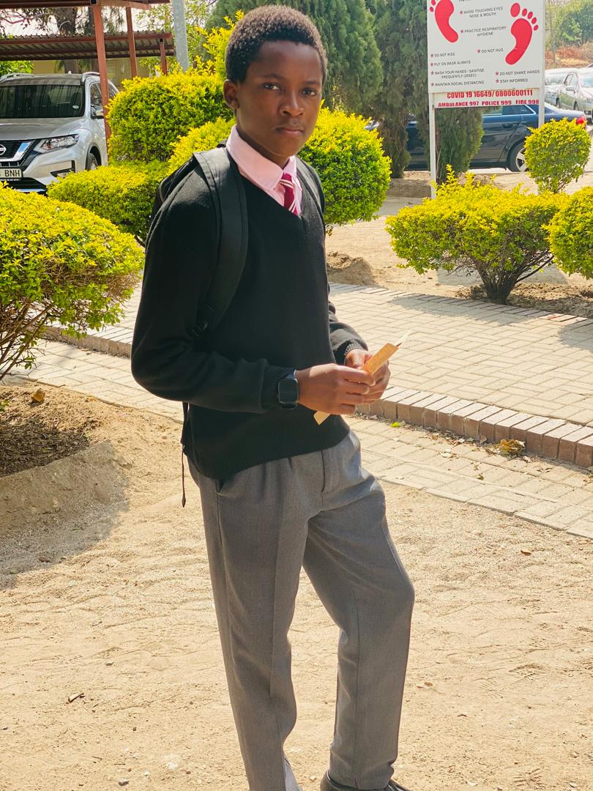

I am a first year student at Botswana School of Business Sciences pursuing a degree in Computer Systems Engineering.Born and raised in the vibrant city of Francistown,Botswana,i have always been fascinated by how things from opening radios and televisions to now delving into web development and data analysis my path has been one of curiosity drivenlearning
Outside of my college studies i enjoy learning about the history of Africa. i also learn how economies work and delve into the world of cryptocurrencies and stock markets. i also spend a lot lot of time fixing dead electronics and recycling old stuff from hard drives to cans and metal scraps
My carrer pathway is to graduate as a software developer aslo working in the field of artificial intelligence and cybersecurity. This are the fields im passionate about and i wish to major in them. I view this fields as the future in technology and i want to be at the forefront of innovation in these areas.I am also interested in entrepreneurship and i hope to start my own tech company one day that focuses on creating innovative solutions to real world problems.
Welcome to the skills section of my webpage in these section i highlight some of the skills that i have learnt while pursuing my ongoing degree and from my personal projects
I have gained proficiency in designing and managing databases using access and Microsoft Excel.i have experience in creating tables, queries, forms, and reports to efficiently organize and analyze data. I am skilled in using Excel for data manipulation, creating pivot tables, and generating insightful visualizations to support decision-making. i gained these skills in semester 1 of my degree through a module called computer technology.
I have exprience in java programming language.I have learned these through reading books and watching youtube tutorials and doing simple projects in java such as a simple calculator and a train station counting system.I am also learning python programming language so that i can use it for data science and machine learning projects in the future.
I have experience in web development using html,css and javascript.One of my projects is this responsive website you are reading right now which i created using html and css and i am currently bulding a cryptocurrency and blockchain learning website using html,cssand bootsrap.
I have developed strong communication skills through group projects and presentations during my studies. I am also a good team player, able to collaborate effectively with others to achieve common goals. Additionally, I have honed my problem-solving abilities, allowing me to approach challenges with a logical and analytical mindset.
I attended my primary school at Phase iv primary school, my junior secondary school at Montsamaisa cjss and my senior secondary school at Francistown senior secondary school and i graduated in 2024 with 44 points.I am currently pursuing my degree in computer systems engineering at Botswana School of Business Sciences.